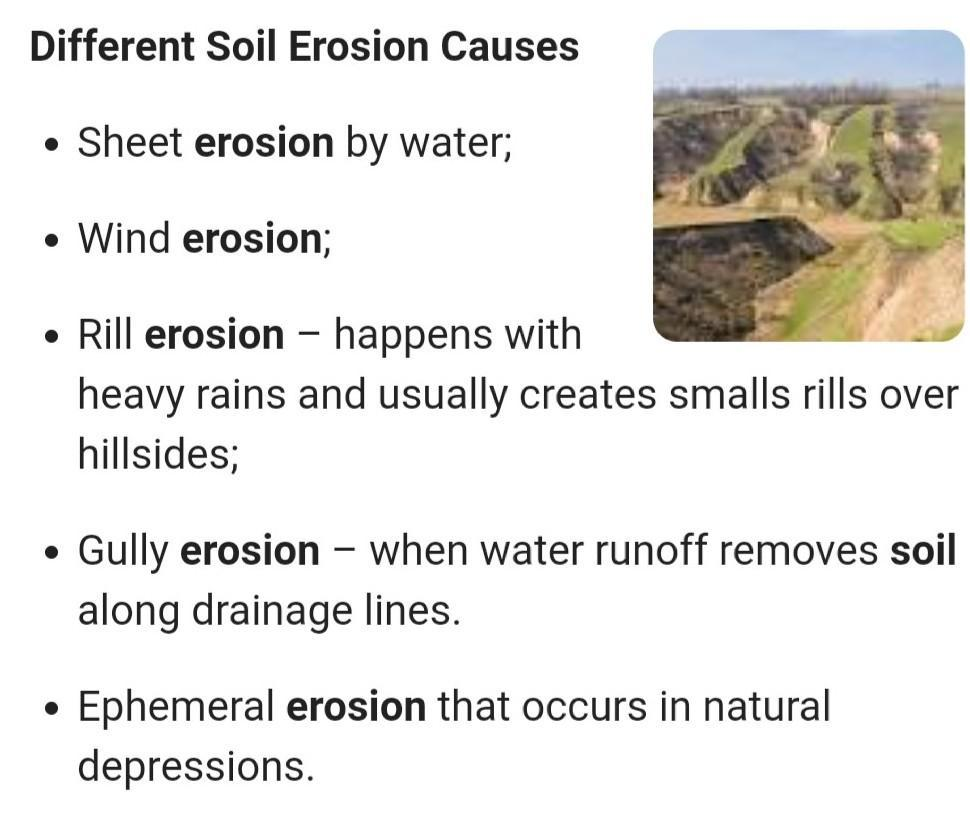
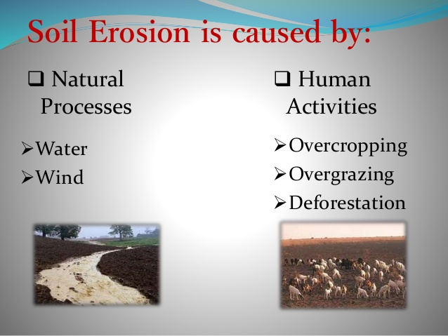

Causes Of Soil Erosion
Here are the points explaining the causes of Soil Erosion:
Natural Factors
- Rainfall: Heavy and intense rainfall can dislodge soil particles and transport them away, causing erosion.
- Wind: Strong winds can blow away the topsoil, especially in arid regions with little vegetation
- Topography: Sloped terrain is more susceptible to erosion as gravity accelerates water runoff and wind movement.

Human Activities
- Construction: Urbanization and infrastructure development disrupt natural land cover, leading to increased erosion.
- Mining: Extracting minerals often involves removing topsoil, leading to soil degradation and erosion.
- Grazing: Overgrazing by livestock can remove vegetation and compact the soil, making it more prone to erosion.
- Improper Land Use: Inappropriate land use and inadequate soil conservation measures exacerbate erosion.
- Agriculture: Poor farming practices like over-tilling, monoculture, and excessive pesticide use can strip the soil of its protective cover.
- Deforestation: Clearing forests for agriculture, urban development, or logging reduces vegetation that holds soil in place.

Climate Change
- Increased Precipitation: Climate change can lead to more intense rainfall events, increasing the potential for erosion.
- Drought: Prolonged droughts can weaken vegetation, making the soil more vulnerable to erosion.
Soil Properties
- Soil Texture: Fine-textured soils, like clay, are more susceptible to erosion than coarse-textured soils.
- Soil Structure: Soil with poor structure is more likely to erode as it lacks stability.
Lack of Vegetative Cover
- Bare Soil: Soils with no or minimal vegetation cover are more exposed to erosion.
- Loss of Riparian Zones: Removing plants along riverbanks and shorelines allows water to directly impact the soil.
Poor Soil Management
- Crop Residue Management: Failing to leave crop residues on the field can expose the soil to erosion.
- No-Till Farming: Tilling practices can disrupt the soil structure and increase erosion risk.
Some Other Causes
- Invasive Species: Non-native plant species can disrupt ecosystems and reduce soil stability.
- Soil Compaction: Compacted soil is less permeable, which can lead to more runoff and erosion.
- Soil Erosion Control Measures: Lack of or improper implementation of erosion control methods, such as terracing, contour farming, and planting cover crops.
- River and Coastal Erosion: Changes in water flow patterns, riverbank or coastal development, and infrastructure can result in soil erosion along water bodies.
- Urbanization: Expanding cities can lead to increased impervious surfaces, which increase runoff and soil erosion.